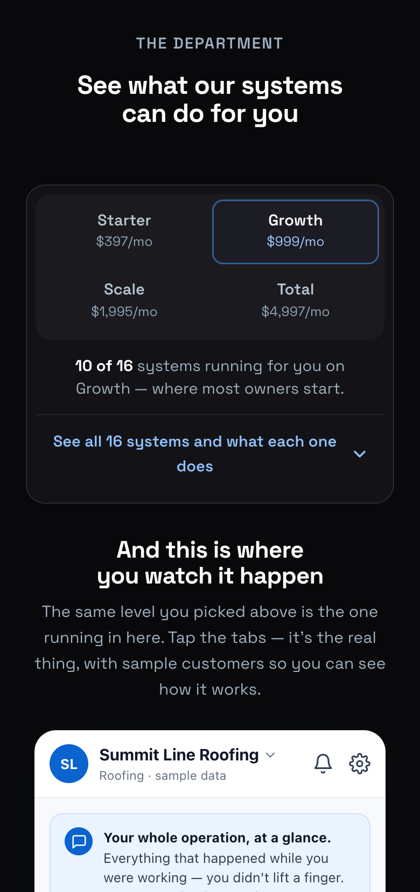
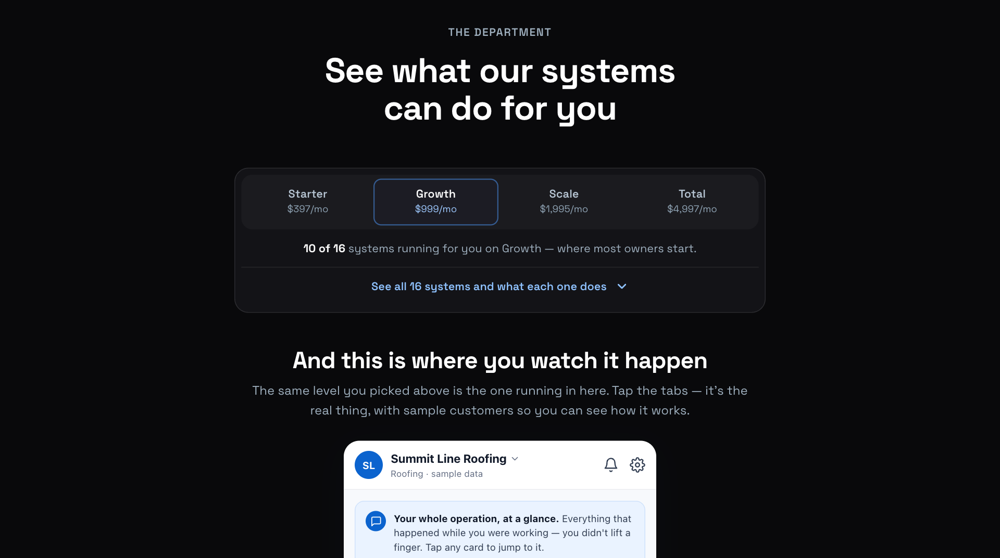
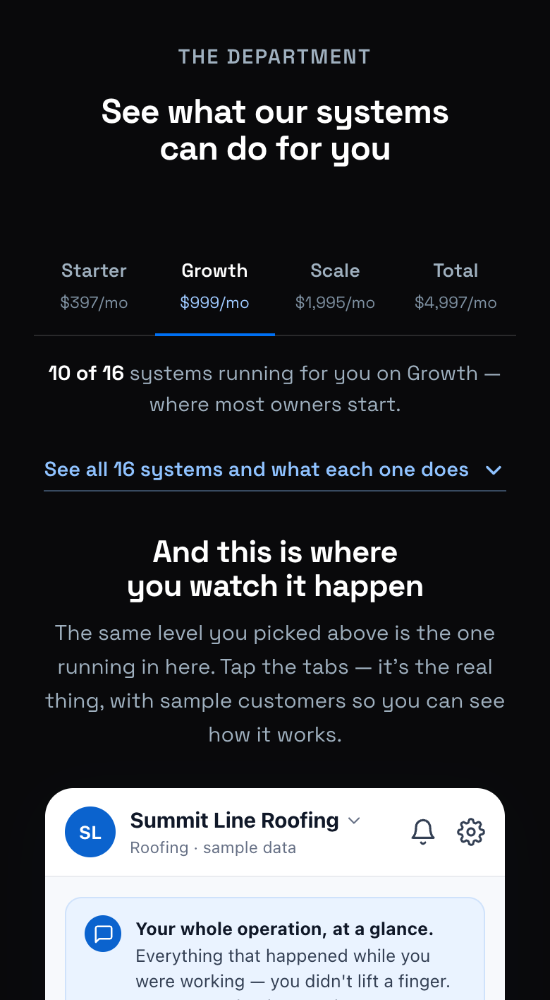
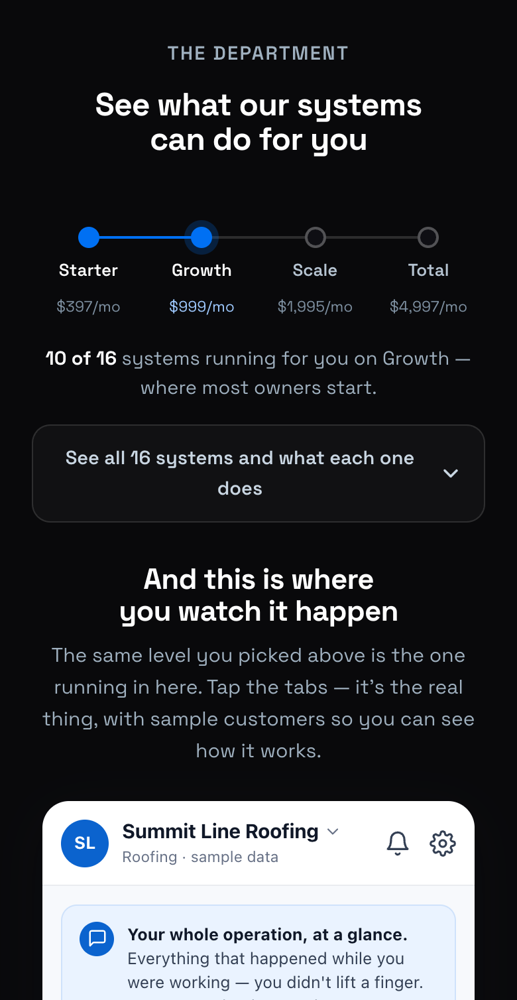
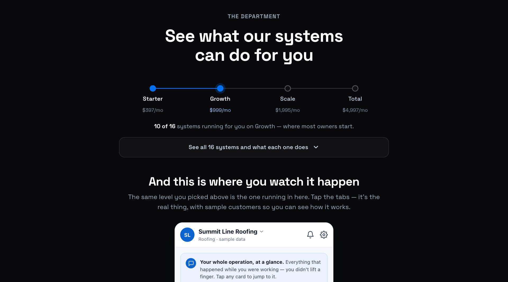
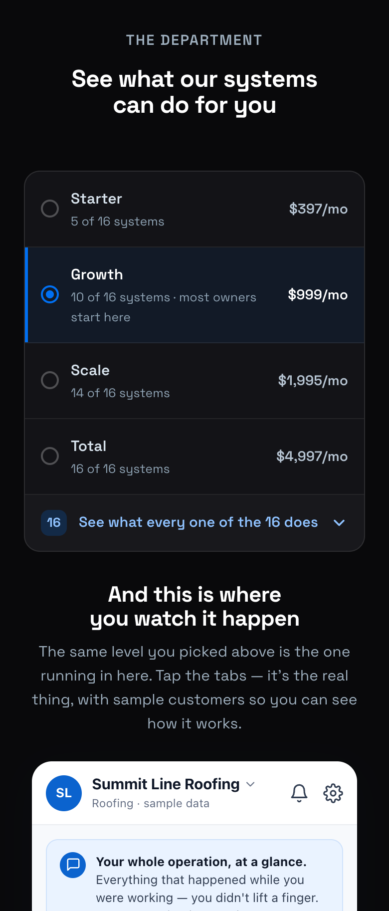
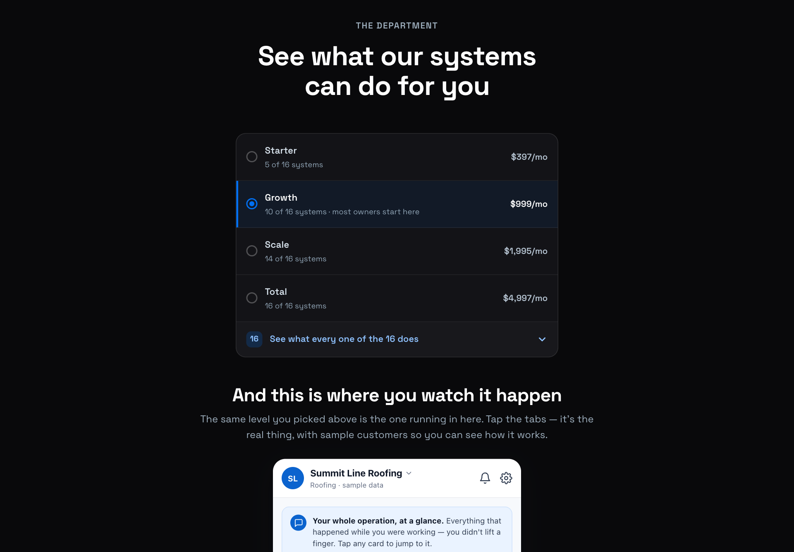
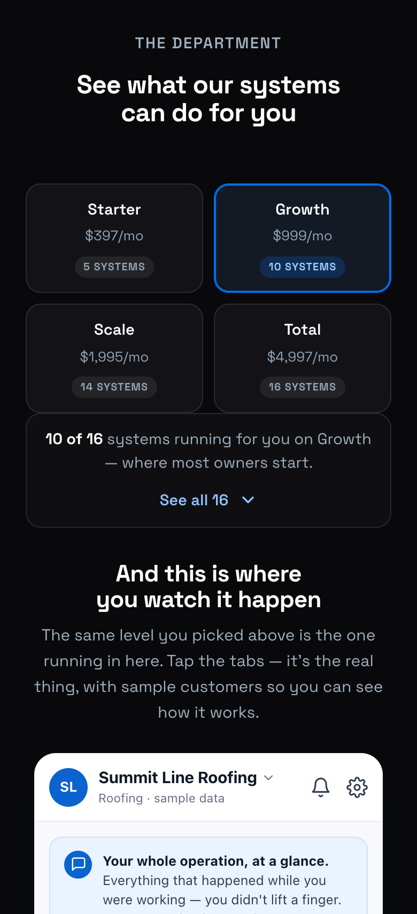
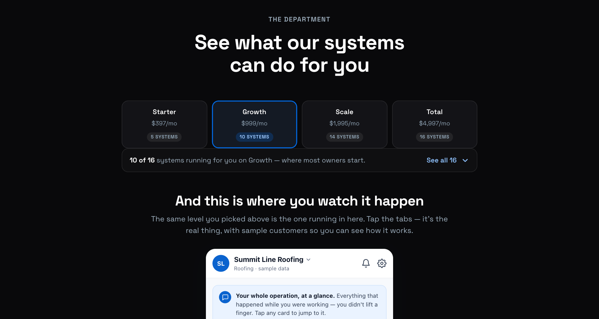

All five are real and clickable on the roofing page — tap a level and the count, the locked tiles and the app all still change; open the drawer and the 16 systems still open with their full stories. No JavaScript, same as what ships today. Nothing here is on the live site.


One bordered card holds the choice, the count and the drawer — the same card recipe the rest of the page already uses, so the control stops floating in space. The selected level is a raised segment with a hairline blue ring, not a filled button, so the only saturated blue left in the band belongs to the phone below it.
Against it: it is still a box — if the complaint is that the area feels heavy, A keeps roughly today's weight (11px shorter). It reduces the noise, not the mass.
Open A →
B
No box at all. Four tabs on one hairline, the selected one carrying white type over a blue underline — the page's own typographic language instead of a widget. The drawer stops being an object and becomes a line of text. This is the quietest, and by far the fastest to the phone.
Against it: less obviously tappable. Tabs read as navigation, and some owners will not realise the prices are a control at all. It also gives the packages the least visual importance of the five — which is either the point, or a problem.
Open B →
C

The one thing none of the others say: the levels are cumulative. They are rungs on a track — the line fills up to your pick and every rung at or below it lights. You can see you are buying a position on a ladder rather than one of four unrelated buttons, which is exactly what the tiles below then demonstrate.
Against it: a progress track implies a journey with an end, and some readers will take the filled line as "you are only 25% of the way there" — a nudge toward Total that we may not want to make this loudly.
Open C →
D

Four rows read top to bottom like a settings screen, and each row carries what it actually buys — "10 of 16 systems" sits on the same line as the price instead of in a sentence underneath. The drawer is simply the last row of the same list. The most explicit of the five, and the most phone-native.
Against it: it is the tallest by a long way — 464px, 75px more than today, pushing the phone further down the page, which is the exact problem the drawer was built to fix. It also looks like a form, not like marketing.
Open D →
E

Four cards built from the exact recipe of the 16 tiles that open below them — same surface, same 14px radius, same border, same chip. The switch stops being a foreign widget and becomes the first row of the board it controls. Of the five, this is the most literally congruent with the section it sits in.
Against it: it makes the packages look like more tiles, so the choice reads as less important than it is — and it is the second-tallest, holding the phone back another 14px.
Open E →
Measured on a 390×844 phone. "Block" is the height from the section heading down to the app introduction — the area you asked me to redesign. Everything else on the page is untouched, so the numbers are directly comparable.
| Rendition | Block height | Phone appears | Character |
|---|---|---|---|
| Today | 389px | 1,214px | two blue objects, three measures |
| A Panel | 378px | 1,203px | contained, calm, still substantial |
| B Ledger | 259px | 1,084px | quiet, typographic, gets out of the way |
| C Ladder | 305px | 1,130px | teaches that levels stack |
| D List | 464px | 1,289px | explicit, form-like, tall |
| E Cards | 403px | 1,228px | same system as the 16 tiles |
If you want one answer: A. It fixes every one of the five faults without giving up the sense that choosing a level matters, and it is the only one where the choice, the consequence and the drawer are visibly one object. If your instinct is that the whole area should shrink and hand the page to the phone sooner, take B — it is 130px lighter and the calmest thing on the band. C is worth a look purely because it is the only one that shows the levels stack.